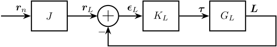
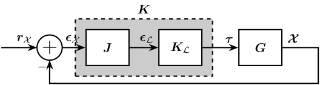
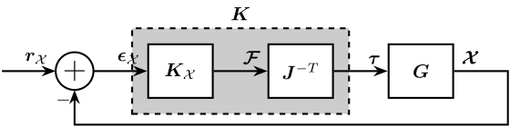
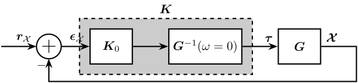
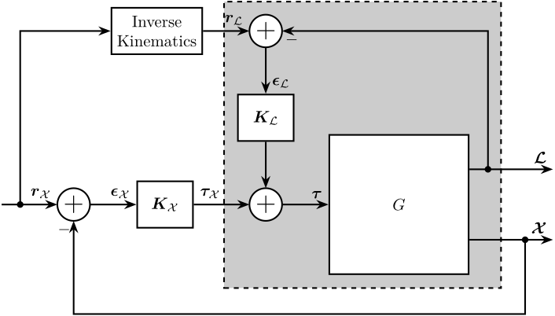

Stewart Platform - Tracking Control
Table of Contents
- 1. Decentralized Control Architecture using Strut Length
- 2. Centralized Control Architecture using Pose Measurement
- 3. Hybrid Control Architecture - HAC-LAC with relative DVF
- 4. Position Error computation
Let’s suppose the control objective is to position \(\bm{\mathcal{X}}\) of the mobile platform of the Stewart platform such that it is following some reference position \(\bm{r}_\mathcal{X}\).
Depending of the measured quantity, different control architectures can be used:
- If the struts length \(\bm{\mathcal{L}}\) is measured, a decentralized control architecture can be used (Section 1)
- If the pose of the mobile platform \(\bm{\mathcal{X}}\) is directly measured, a centralized control architecture can be used (Section 2)
- If both \(\bm{\mathcal{L}}\) and \(\bm{\mathcal{X}}\) are measured, we can use an hybrid control architecture (Section 3)
1 Decentralized Control Architecture using Strut Length
1.1 Control Schematic
The control architecture is shown in Figure 1.
The required leg length \(\bm{r}_\mathcal{L}\) is computed from the reference path \(\bm{r}_\mathcal{X}\) using the inverse kinematics.
Then, a diagonal (decentralized) controller \(\bm{K}_\mathcal{L}\) is used such that each leg lengths stays close to its required length.

Figure 1: Decentralized control for reference tracking
1.2 Initialize the Stewart platform
stewart = initializeStewartPlatform(); stewart = initializeFramesPositions(stewart, 'H', 90e-3, 'MO_B', 45e-3); stewart = generateGeneralConfiguration(stewart); stewart = computeJointsPose(stewart); stewart = initializeStrutDynamics(stewart); stewart = initializeJointDynamics(stewart, 'type_F', 'universal_p', 'type_M', 'spherical_p'); stewart = initializeCylindricalPlatforms(stewart); stewart = initializeCylindricalStruts(stewart); stewart = computeJacobian(stewart); stewart = initializeStewartPose(stewart); stewart = initializeInertialSensor(stewart, 'type', 'accelerometer', 'freq', 5e3);
ground = initializeGround('type', 'rigid'); payload = initializePayload('type', 'none'); controller = initializeController('type', 'open-loop');
disturbances = initializeDisturbances(); references = initializeReferences(stewart);
1.3 Identification of the plant
Let’s identify the transfer function from \(\bm{\tau}\) to \(\bm{L}\).
%% Name of the Simulink File mdl = 'stewart_platform_model'; %% Input/Output definition clear io; io_i = 1; io(io_i) = linio([mdl, '/Controller'], 1, 'openinput'); io_i = io_i + 1; % Actuator Force Inputs [N] io(io_i) = linio([mdl, '/Stewart Platform'], 1, 'openoutput', [], 'dLm'); io_i = io_i + 1; % Relative Displacement Outputs [m] %% Run the linearization G = linearize(mdl, io); G.InputName = {'F1', 'F2', 'F3', 'F4', 'F5', 'F6'}; G.OutputName = {'L1', 'L2', 'L3', 'L4', 'L5', 'L6'};
1.4 Plant Analysis

1.5 Controller Design
The controller consists of:
- A pure integrator
- A lead around the crossover frequency to increase the phase margin
- A low pass filter with a cut-off frequency 3 times the crossover to increase the gain margin
The obtained loop gains corresponding to the diagonal elements are shown in Figure 4.
wc = 2*pi*30; Kl = diag(1./diag(abs(freqresp(G, wc)))) * wc/s * 1/(1 + s/3/wc);

1.6 Simulation
t = linspace(0, 10, 1000); r = zeros(6, length(t)); r(1, :) = 5e-3*sin(2*pi*t); references = initializeReferences(stewart, 't', t, 'r', r);
controller = initializeController('type', 'ref-track-L');
sim('stewart_platform_model') simout_D = simout;
1.7 Results
1.8 Conclusion
Such control architecture is easy to implement and give good results. The inverse kinematics is easy to compute.
However, as \(\mathcal{X}\) is not directly measured, it is possible that important positioning errors are due to finite stiffness of the joints and other imperfections.
2 Centralized Control Architecture using Pose Measurement
2.1 Control Schematic
The centralized controller takes the position error \(\bm{\epsilon}_\mathcal{X}\) as an inputs and generate actuator forces \(\bm{\tau}\) (see Figure 7). The signals are:
- reference path \(\bm{r}_\mathcal{X} = \begin{bmatrix} \epsilon_x & \epsilon_y & \epsilon_z & \epsilon_{R_x} & \epsilon_{R_y} & \epsilon_{R_z} \end{bmatrix}\)
- tracking error \(\bm{\epsilon}_\mathcal{X} = \begin{bmatrix} \epsilon_x & \epsilon_y & \epsilon_z & \epsilon_{R_x} & \epsilon_{R_y} & \epsilon_{R_z} \end{bmatrix}\)
- actuator forces \(\bm{\tau} = \begin{bmatrix} \tau_1 & \tau_2 & \tau_3 & \tau_4 & \tau_5 & \tau_6 \end{bmatrix}\)
- payload pose \(\bm{\mathcal{X}) = \begin{bmatrix} x & y & z & R_x & R_y & R_z \end{bmatrix}\)
Figure 7: Centralized Controller
Instead of designing a full MIMO controller \(K\), we first try to make the plant more diagonal by pre- or post-multiplying some constant matrix, then we design a diagonal controller.
We can think of two ways to make the plant more diagonal that are described in sections 2.4 and 2.5.
2.2 Initialize the Stewart platform
stewart = initializeStewartPlatform(); stewart = initializeFramesPositions(stewart, 'H', 90e-3, 'MO_B', 45e-3); stewart = generateGeneralConfiguration(stewart); stewart = computeJointsPose(stewart); stewart = initializeStrutDynamics(stewart); stewart = initializeJointDynamics(stewart, 'type_F', 'universal_p', 'type_M', 'spherical_p'); stewart = initializeCylindricalPlatforms(stewart); stewart = initializeCylindricalStruts(stewart); stewart = computeJacobian(stewart); stewart = initializeStewartPose(stewart); stewart = initializeInertialSensor(stewart, 'type', 'accelerometer', 'freq', 5e3);
ground = initializeGround('type', 'rigid'); payload = initializePayload('type', 'none'); controller = initializeController('type', 'open-loop');
disturbances = initializeDisturbances(); references = initializeReferences(stewart);
2.3 Identification of the plant
Let’s identify the transfer function from \(\bm{\tau}\) to \(\bm{L}\).
%% Name of the Simulink File mdl = 'stewart_platform_model'; %% Input/Output definition clear io; io_i = 1; io(io_i) = linio([mdl, '/Controller'], 1, 'openinput'); io_i = io_i + 1; % Actuator Force Inputs [N] io(io_i) = linio([mdl, '/Relative Motion Sensor'], 1, 'openoutput'); io_i = io_i + 1; % Relative Displacement Outputs [m] %% Run the linearization G = linearize(mdl, io); G.InputName = {'F1', 'F2', 'F3', 'F4', 'F5', 'F6'}; G.OutputName = {'Dx', 'Dy', 'Dz', 'Rx', 'Ry', 'Rz'};
2.4 Diagonal Control - Leg’s Frame
2.4.1 Control Architecture
The pose error \(\bm{\epsilon}_\mathcal{X}\) is first converted in the frame of the leg by using the Jacobian matrix. Then a diagonal controller \(\bm{K}_\mathcal{L}\) is designed. The final implemented controller is \(\bm{K} = \bm{K}_\mathcal{L} \cdot \bm{J}\) as shown in Figure 8
Note here that the transformation from the pose error \(\bm{\epsilon}_\mathcal{X}\) to the leg’s length errors by using the Jacobian matrix is only valid for small errors.

Figure 8: Controller in the frame of the legs
2.4.2 Plant Analysis
We now multiply the plant by the Jacobian matrix as shown in Figure 8 to obtain a more diagonal plant.
Gl = stewart.kinematics.J*G; Gl.OutputName = {'D1', 'D2', 'D3', 'D4', 'D5', 'D6'};
All the diagonal elements are identical. This will simplify the design of the controller as all the elements of the diagonal controller can be made identical.
The off-diagonal terms of the controller are shown in Figure 10.
We can see that this totally decouples the system at low frequency.
This was expected since: \[ \bm{G}(\omega = 0) = \frac{\delta\bm{\mathcal{X}}}{\delta\bm{\tau}}(\omega = 0) = \bm{J}^{-1} \frac{\delta\bm{\mathcal{L}}}{\delta\bm{\tau}}(\omega = 0) = \bm{J}^{-1} \text{diag}(\mathcal{K}_1^{-1} \ \dots \ \mathcal{K}_6^{-1}) \]
Thus \(J \cdot G(\omega = 0) = J \cdot \frac{\delta\bm{\mathcal{X}}}{\delta\bm{\tau}}(\omega = 0)\) is a diagonal matrix containing the inverse of the joint’s stiffness.
2.4.3 Controller Design
The controller consists of:
- A pure integrator
- A lead around the crossover frequency to increase the phase margin
- A low pass filter with a cut-off frequency 3 times the crossover to increase the gain margin
The obtained loop gains corresponding to the diagonal elements are shown in Figure 11.
wc = 2*pi*30; Kl = diag(1./diag(abs(freqresp(Gl, wc)))) * wc/s * 1/(1 + s/3/wc);
The controller \(\bm{K} = \bm{K}_\mathcal{L} \bm{J}\) is computed.
K = Kl*stewart.kinematics.J;
2.4.4 Simulation
We specify the reference path to follow.
t = linspace(0, 10, 1000); r = zeros(6, length(t)); r(1, :) = 5e-3*sin(2*pi*t); references = initializeReferences(stewart, 't', t, 'r', r);
controller = initializeController('type', 'ref-track-X');
We run the simulation and we save the results.
sim('stewart_platform_model') simout_L = simout;
2.5 Diagonal Control - Cartesian Frame
2.5.1 Control Architecture
A diagonal controller \(\bm{K}_\mathcal{X}\) take the pose error \(\bm{\epsilon}_\mathcal{X}\) and generate cartesian forces \(\bm{\mathcal{F}}\) that are then converted to actuators forces using the Jacobian as shown in Figure e 12.
The final implemented controller is \(\bm{K} = \bm{J}^{-T} \cdot \bm{K}_\mathcal{X}\).

Figure 12: Controller in the cartesian frame
2.5.2 Plant Analysis
We now multiply the plant by the Jacobian matrix as shown in Figure 12 to obtain a more diagonal plant.
Gx = G*inv(stewart.kinematics.J'); Gx.InputName = {'Fx', 'Fy', 'Fz', 'Mx', 'My', 'Mz'};
The diagonal terms are not the same. The resonances of the system are “decoupled”. For instance, the vertical resonance of the system is only present on the diagonal term corresponding to \(D_z/\mathcal{F}_z\).

{kind=link}
{kind=link}
{kind=link}
{kind=link}
{kind=link}
{kind=link}
{kind=link}
{kind=link}
{kind=link}
{kind=link}
Here the system is almost decoupled at all frequencies except for the transfer functions \(\frac{R_y}{\mathcal{F}_x}\) and \(\frac{R_x}{\mathcal{F}_y}\).
This is due to the fact that the compliance matrix of the Stewart platform is not diagonal.
| 4.75e-08 | -1.9751e-24 | 7.3536e-25 | 5.915e-23 | 3.2093e-07 | 5.8696e-24 |
| -7.1302e-25 | 4.75e-08 | 2.8866e-25 | -3.2093e-07 | -5.38e-24 | -3.2725e-23 |
| 7.9012e-26 | -6.3991e-25 | 2.099e-08 | 1.9073e-23 | 5.3384e-25 | -6.4867e-40 |
| 1.3724e-23 | -3.2093e-07 | 1.2799e-23 | 5.1863e-06 | 4.9412e-22 | -3.8269e-24 |
| 3.2093e-07 | 7.6013e-24 | 1.2239e-23 | 6.8886e-22 | 5.1863e-06 | -2.6025e-22 |
| 7.337e-24 | -3.2395e-23 | -1.571e-39 | 9.927e-23 | -3.2531e-22 | 1.7073e-06 |
One way to have this compliance matrix diagonal (and thus having a decoupled plant at DC) is to use a cubic architecture with the center of the cube’s coincident with frame \(\{A\}\).
This control architecture can also give a dynamically decoupled plant if the Center of mass of the payload is also coincident with frame \(\{A\}\).
2.5.3 Controller Design
The controller consists of:
- A pure integrator
- A lead around the crossover frequency to increase the phase margin
- A low pass filter with a cut-off frequency 3 times the crossover to increase the gain margin
The obtained loop gains corresponding to the diagonal elements are shown in Figure 15.
wc = 2*pi*30; Kx = diag(1./diag(abs(freqresp(Gx, wc)))) * wc/s * 1/(1 + s/3/wc);
{kind=link}
The controller \(\bm{K} = \bm{J}^{-T} \bm{K}_\mathcal{X}\) is computed.
K = inv(stewart.kinematics.J')*Kx;
2.5.4 Simulation
We specify the reference path to follow.
t = linspace(0, 10, 1000); r = zeros(6, length(t)); r(1, :) = 5e-3*sin(2*pi*t); references = initializeReferences(stewart, 't', t, 'r', r);
controller = initializeController('type', 'ref-track-X');
We run the simulation and we save the results.
sim('stewart_platform_model') simout_X = simout;
2.6 Diagonal Control - Steady State Decoupling
2.6.1 Control Architecture
The plant \(\bm{G}\) is pre-multiply by \(\bm{G}^{-1}(\omega = 0)\) such that the “shaped plant” \(\bm{G}_0 = \bm{G} \bm{G}^{-1}(\omega = 0)\) is diagonal at low frequency.
Then a diagonal controller \(\bm{K}_0\) is designed.
The control architecture is shown in Figure 16.

Figure 16: Static Decoupling of the Plant
2.6.2 Plant Analysis
The plant is pre-multiplied by \(\bm{G}^{-1}(\omega = 0)\). The diagonal elements of the shaped plant are shown in Figure 17.
G0 = G*inv(freqresp(G, 0));
{kind=link}
{kind=link}
2.6.3 Controller Design
We have that: \[ \bm{G}^{-1}(\omega = 0) = \left(\frac{\delta\bm{\mathcal{X}}}{\delta\bm{\tau}}(\omega = 0)\right)^{-1} = \left( \bm{J}^{-1} \frac{\delta\bm{\mathcal{L}}}{\delta\bm{\tau}}(\omega = 0) \right)^{-1} = \text{diag}(\mathcal{K}_1^{-1} \ \dots \ \mathcal{K}_6^{-1}) \bm{J} \]
And because:
- all the leg stiffness are equal
- the controller equal to a \(\bm{K}_0(s) = k(s) \bm{I}_6\)
We have that \(\bm{K}_0(s)\) commutes with \(\bm{G}^{-1}(\omega = 0)\) and thus the overall controller \(\bm{K}\) is the same as the one obtain in section 2.4.
2.7 Comparison
2.7.1 Obtained MIMO Controllers
{kind=link}
2.7.2 Simulation Results
The position error \(\bm{\epsilon}_\mathcal{X}\) for both centralized architecture are shown in Figure 20. The corresponding leg’s length errors \(\bm{\epsilon}_\mathcal{L}\) are shown in Figure 21.
Based on Figure 20, we can see that:
- There is some tracking error \(\epsilon_x\)
- The errors \(\epsilon_y\), \(\epsilon_{R_x}\) and \(\epsilon_{R_z}\) are quite negligible
- There is some error in the vertical position \(\epsilon_z\). The frequency of the error \(\epsilon_z\) is twice the frequency of the reference path \(r_x\).
- There is some error \(\epsilon_{R_y}\). This error is much lower when using the diagonal control in the frame of the leg instead of the cartesian frame.
{kind=link}
{kind=link}
2.8 Conclusion
Both control architecture gives similar results even tough the control in the Leg’s frame gives slightly better results.
The main differences between the control architectures used in sections 2.4 and 2.5 are summarized in Table 1.
| Leg’s Frame | Cartesian Frame | Static Decoupling | |
|---|---|---|---|
| Plant Meaning | \(\delta\mathcal{L}_i/\tau_i\) | \(\delta\mathcal{X}_i/\mathcal{F}_i\) | No physical meaning |
| Obtained Decoupling | Decoupled at DC | Dynamical decoupling except few terms | Decoupled at DC |
| Diagonal Elements | Identical with all the Resonances | Different, resonances are cancel out | No Alternating poles and zeros |
| Mechanical Architecture | Architecture Independent | Better with Cubic Architecture | |
| Robustness to Uncertainty | Good (only depends on \(J\)) | Good (only depends on \(J\)) | Bad (depends on the mass) |
These decoupling methods only uses the Jacobian matrix which only depends on the Stewart platform geometry. Thus, this method should be quite robust against parameter variation (e.g. the payload mass).
3 Hybrid Control Architecture - HAC-LAC with relative DVF
3.1 Control Schematic

Figure 22: Centralized Controller
4 Position Error computation
- \(\{W\}\) the initial fixed frame (base in which the measurement is done)
- \(\{R\}\) the reference frame corresponding to the wanted pose of the sample
- \(\{M\}\) the frame corresponding to the measured pose of the sample
We have then computed:
- \({}^W\bm{T}_R\) which corresponds to the wanted pose of the sample with respect to the granite
- \({}^W\bm{T}_M\) which corresponds to the measured pose of the sample with respect to the granite
Reference Position with respect to fixed frame {W}: \({}^WT_R\)
Dx = 0; Dy = 0; Dz = 0.1; Rx = pi; Ry = 0; Rz = 0; WTr = zeros(4,4); R = [cos(Rz) -sin(Rz) 0; sin(Rz) cos(Rz) 0; 0 0 1] * ... [cos(Ry) 0 sin(Ry); 0 1 0; -sin(Ry) 0 cos(Ry)] * ... [1 0 0; 0 cos(Rx) -sin(Rx); 0 sin(Rx) cos(Rx)]; WTr(1:3, 1:3) = R; WTr(1:4, 4) = [Dx ; Dy ; Dz; 1];
Measured Position with respect to fixed frame {W}: \({}^WT_M\)
Dx = 0; Dy = 0; Dz = 0; Rx = pi; Ry = 0; Rz = 0; WTm = zeros(4,4); R = [cos(Rz) -sin(Rz) 0; sin(Rz) cos(Rz) 0; 0 0 1] * ... [cos(Ry) 0 sin(Ry); 0 1 0; -sin(Ry) 0 cos(Ry)] * ... [1 0 0; 0 cos(Rx) -sin(Rx); 0 sin(Rx) cos(Rx)]; WTm(1:3, 1:3) = R; WTm(1:4, 4) = [Dx ; Dy ; Dz; 1];
We would like to compute \({}^M\bm{T}_R\) which corresponds to the wanted pose of the sample expressed in a frame attached to the top platform of the nano-hexapod (frame \(\{M\}\)).
We have:
\begin{align} {}^M\bm{T}_R &= {}^M\bm{T}_W \cdot {}^W\bm{T}_R \\ &= {}^W{\bm{T}_M}^{-1} \cdot {}^W\bm{T}_R \end{align}% Error with respect to the top platform MTr = [WTm(1:3,1:3)', -WTm(1:3,1:3)'*WTm(1:3,4) ; 0 0 0 1]*WTr; T = MTr; Edx = T(1, 4); Edy = T(2, 4); Edz = T(3, 4); % The angles obtained are u-v-w Euler angles (rotations in the moving frame) Ery = atan2( T(1, 3), sqrt(T(1, 1)^2 + T(1, 2)^2)); Erx = atan2(-T(2, 3)/cos(Ery), T(3, 3)/cos(Ery)); Erz = atan2(-T(1, 2)/cos(Ery), T(1, 1)/cos(Ery)); [Edx, Edy, Edz, Erx, Ery, Erz]